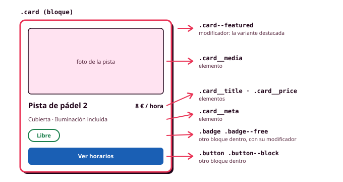

5. Nomenclatura BEM
Con ITCSS ya sabes en qué fichero va cada regla, pero vas a tomar cientos de veces otra decisión: cómo se llama cada clase. Si el título de la tarjeta se llama .titulo, chocará con el del diálogo; si se llama .card .title, tendrá más especificidad que el resto; y si cada persona del equipo nombra a su manera, nadie encontrará nada. BEM es una convención para poner nombres que resuelve esos problemas, y en este módulo es la forma de nombrar las clases de tus componentes (RA2-g).
BEM significa Block, Element, Modifier (bloque, elemento y modificador). Lo creó el equipo de Yandex para mantener interfaces enormes con mucha gente trabajando a la vez, y encaja de forma natural con tu sistema de Figma: cada componente es un bloque, sus capas son elementos y sus variantes son modificadores.

Bloque, elemento y modificador
| Parte | Qué es | Cómo se escribe | Ejemplo |
|---|---|---|---|
| Bloque | Un componente que funciona por sí solo | bloque |
.card, .button |
| Elemento | Una parte del bloque que no tiene sentido fuera de él | bloque__elemento (dos guiones bajos) |
.card__title, .card__price |
| Modificador | Una variante del bloque o del elemento | bloque--modificador (dos guiones) |
.card--featured, .button--danger |
<article class="card card--featured">
<div class="card__header">
<h3 class="card__title">Pista de pádel 2</h3>
<p class="card__price">8 € / hora</p>
</div>
<p class="card__meta">Cubierta · Iluminación incluida</p>
</article>
Las palabras se escriben en minúsculas y separadas por un guion (main-nav__link), y en inglés, igual que los tokens. Los dobles guiones resultan raros al principio, pero a cambio sabes qué es cada clase con solo leerla, y encuentras todo lo de un componente buscando card__ en el proyecto.
El nombre resuelve los tres problemas del principio: .card__title y .dialog__title no pueden chocar, todos los selectores tienen una sola clase y la misma especificidad, y cualquier persona del equipo nombra igual.
Cinco reglas
- Un elemento pertenece al bloque, nunca a otro elemento. El título se llama
.card__titleaunque esté dentro de la cabecera, nunca.card__header__title. Así puedes moverlo sin cambiarle el nombre. - Un modificador siempre acompaña a la clase base:
class="button button--danger". El modificador solo describe lo que cambia, y todo lo demás está en.button. - Un bloque no depende de dónde está. Nada de
.sidebar .card. Si la tarjeta tiene que verse distinta, es un modificador o una container query. - Nombres por la función.
.button--dangeren lugar de.button-red, que dejaría de tener sentido si cambias el color. - Una sola clase por selector, salvo las pseudoclases y los atributos de estado (
.button:hover).
Estados
Las variantes que se eligen al escribir el HTML (el botón de peligro) son modificadores. Los estados que cambian mientras se usa la aplicación (una hora seleccionada, la pantalla actual del menú) se expresan, por este orden de preferencia:
- Con una pseudoclase, si existe:
:checked,:disabled,:focus-visible. - Con un atributo de ARIA, si el estado tiene que anunciarse:
[aria-current="page"],[aria-expanded="true"]. - Con una clase de estado (
.is-loading), solo si no hay otra opción.
Con aria-current, el lector de pantalla también sabe cuál es la pantalla actual, cosa que una clase --active no le dice.
De Figma a BEM
Si tus componentes de Figma tienen nombres claros, ya tienes casi todos los nombres de BEM:
| En Figma | En BEM |
|---|---|
Nombre del componente (Card) |
Bloque (.card) |
Capas con nombre (Title, Price) |
Elementos (.card__title, .card__price) |
Propiedad de variante (Type=Danger) |
Modificador (.button--danger) |
Propiedad de estado (State=Hover) |
Pseudoclase o atributo (:hover) |
Para que funcione, las capas de tus componentes en Figma tienen que tener nombre. Renómbralas con los mismos nombres que tendrán en el código, y el diseño y el código hablarán el mismo idioma, igual que con los tokens.
BEM con Sass y con tokens
Con Sass, cada componente se escribe en un único bloque gracias a &__ y &--, y sus modificadores solo cambian los tokens de componente que necesitan:
.button {
--button-bg: var(--color-primary);
--button-fg: var(--color-on-primary);
background-color: var(--button-bg);
color: var(--button-fg);
&__icon { inline-size: 1.25rem; }
&--danger {
--button-bg: var(--color-error);
--button-fg: var(--color-on-error);
}
}
Un modificador ocupa dos o tres líneas y nunca repite lo que ya está en el bloque.
Para saber más: mezclas
A veces un mismo nodo es una parte de un bloque y, a la vez, un bloque en sí mismo. El resumen de la reserva es un elemento de la pantalla (su posición la decide la pantalla) y es también una tarjeta (su aspecto lo decide la tarjeta). BEM lo resuelve poniéndole las dos clases: <aside class="booking__summary card">. Así un bloque coloca a otro sin tocar su aspecto.
BEM y @scope
Desde finales de 2025, CSS tiene una herramienta propia para que las reglas de una parte de la página no afecten al resto: la regla @scope, que ya funciona en todos los navegadores principales. Limita un bloque de reglas a lo que hay dentro de un elemento, que se llama raíz y se selecciona con :scope:
@scope (.prose) {
:scope { max-width: 65ch; }
h2 { font: var(--font-heading-2); }
a { color: var(--color-primary); }
}
Solo los <h2> y los <a> que están dentro de .prose reciben esos estilos, y además la raíz no suma especificidad: dentro del ámbito, a sigue valiendo como una etiqueta, así que cualquier componente puede sobrescribirlo con una clase.
En este módulo seguimos usando BEM para los componentes, porque los nombres dicen qué es cada cosa, se corresponden con las capas de Figma y no dependen de la etiqueta. @scope es la herramienta para el contenido en el que no se pueden poner clases, y estos son sus tres usos más claros:
Ejemplo 1: el texto de las normas de uso
Las normas de uso de las pistas son un texto con títulos, listas y enlaces que llega de un editor o de una base de datos, sin clases. Con el bloque @scope (.prose) de arriba, reciben su estilo, y el enlace de la cabecera, que está fuera de .prose, no cambia.
Ejemplo 2: un componente dentro del texto
Si en medio de las normas aparece un aviso de tu sistema, las reglas de .prose también le afectarían. Con to se pone un límite inferior, y las reglas se detienen al llegar a él:
@scope (.prose) to (.alert, .card, .dialog) {
p { color: var(--color-on-surface); }
a { color: var(--color-primary); }
}
El aviso conserva el aspecto que tiene en cualquier otra pantalla.
Ejemplo 3: zonas claras dentro de zonas oscuras
En la pantalla de inicio hay una franja oscura con la oferta de verano, y dentro, una tarjeta clara. Con selectores normales, un enlace de la tarjeta clara cumple las dos reglas y gana la escrita después, así que puede quedar azul claro sobre fondo claro:
/* Sin @scope: gana la regla escrita después */
.surface-light a { color: var(--blue-500); }
.surface-dark a { color: var(--blue-200); }
Con @scope, cuando dos reglas empatan, gana la de la raíz más cercana al elemento. Es el criterio de proximidad, y hace que cada enlace tome el color de la zona que lo rodea:
Sass entiende @scope y lo pasa tal cual al CSS. En tu arquitectura de ITCSS, un bloque como .prose va en la capa de componentes, en su propio fichero.
Errores frecuentes
| Así no | Así sí |
|---|---|
.card__header__title |
.card__title |
class="button--danger" |
class="button button--danger" |
.sidebar .card { ... } |
.card--compact o una container query |
.button-red |
.button--danger |
.card h3 { ... } |
.card__title { ... } |
.main-nav__link--active |
.main-nav__link[aria-current="page"] |
Antes de seguir
Revisa el HTML y el SCSS de tus componentes:
- Cada componente de Figma tiene un bloque con el mismo nombre.
- Ningún nombre encadena dos elementos.
- Los modificadores van junto a su clase base.
- Los estados usan pseudoclases o atributos siempre que existan.
- Todos los selectores tienen una sola clase.